字重 weight
| 1.00 | 荆南缘默体 kn-yuanmo | 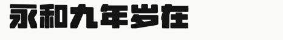 |
| 0.99 | USMCC星界黑体 usmcc-stellar | 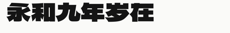 |
| 0.99 | 纳米扁界黑 nano-byonggye-hei | 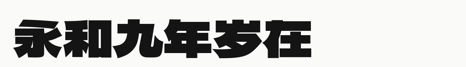 |
| 0.99 | 无界黑 unbounded-sans |  |
| 0.99 | 嗷呜碎瘾黑 已手动修正 howl-shattered-display | 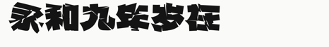 |
| 0.97 | 字制区喜脉体 fontqu-ximai | 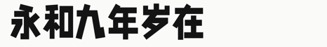 |
| 0.96 | 黄引齐招牌体 已手动修正 huangyinqi-zhaopai | 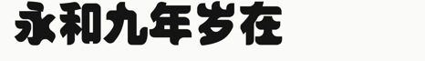 |
| 0.96 | 荆南圆体 keinan-maru-pop | 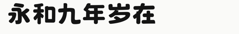 |
| 0.96 | 荆南波波黑 kn-bobohei | 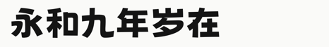 |
| 0.96 | 猫啃什锦黑 maoken-assorted | 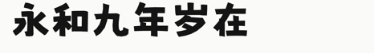 |
| 0.01 | 南西油墨宋 nanxi-youmosong | 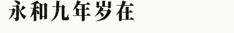 |
| 0.02 | 余繁细柳体 yufan-xiliu | 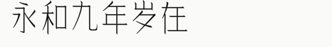 |
| 0.04 | 令东齐伋体 qiji | 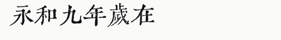 |
| 0.04 | 余繁新语 yufan-xinyu | 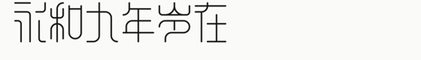 |
| 0.04 | Fandol 仿宋 fandol-fang | 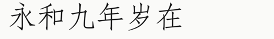 |
| 0.05 | 文鼎PL简报宋 ar-pl-sungti | 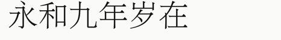 |
| 0.05 | 文鼎PL明体 ar-pl-uming | 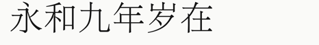 |
| 0.05 | 全字库正宋体 tw-sung | 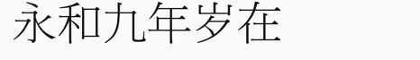 |
| 0.05 | 花仿宋 flower-fangsong | 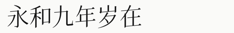 |
| 0.05 | 不寐仿宋 insomnia-fangsong | 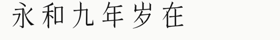 |